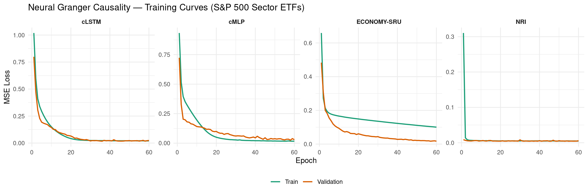
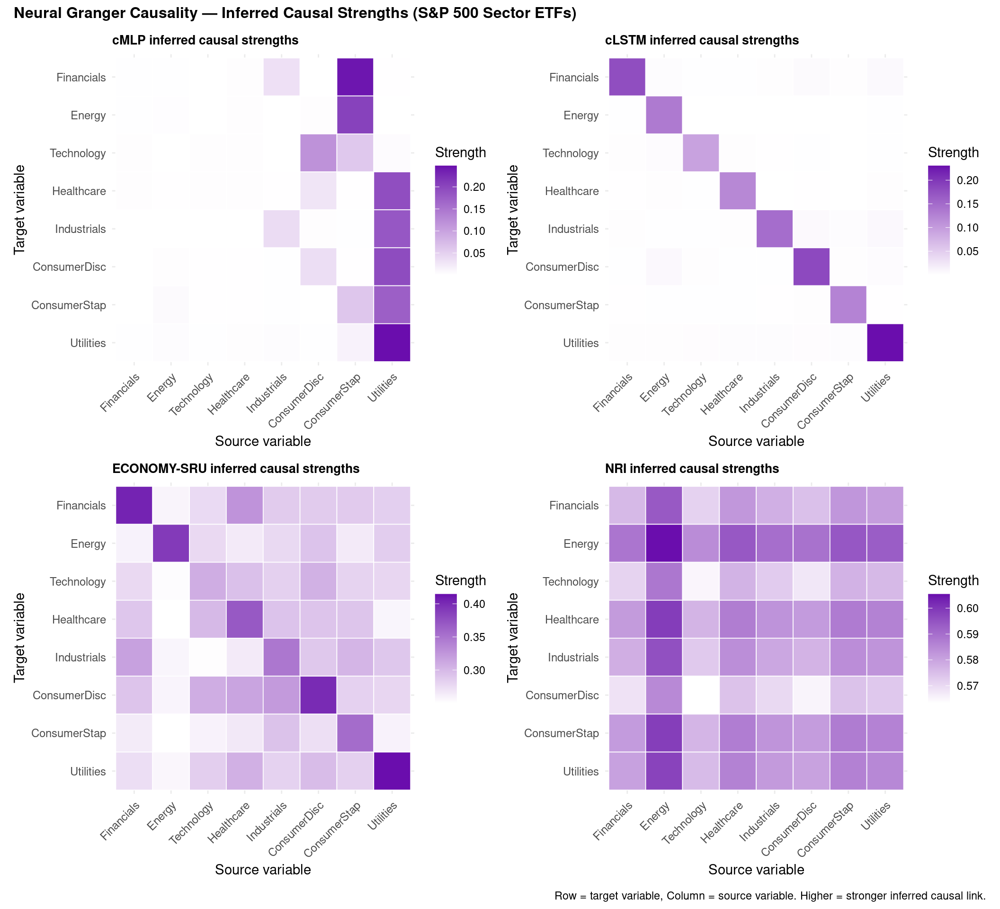
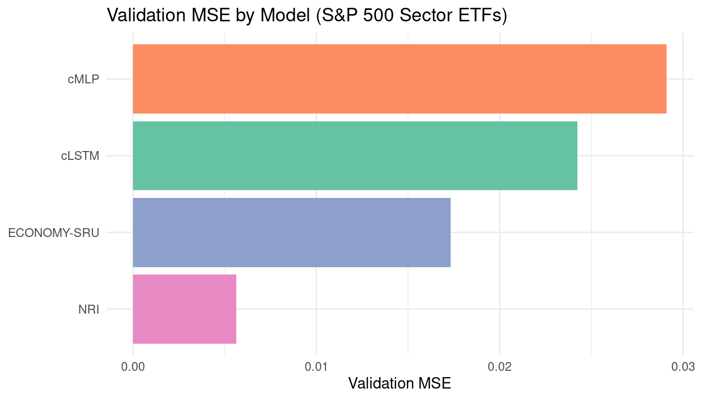
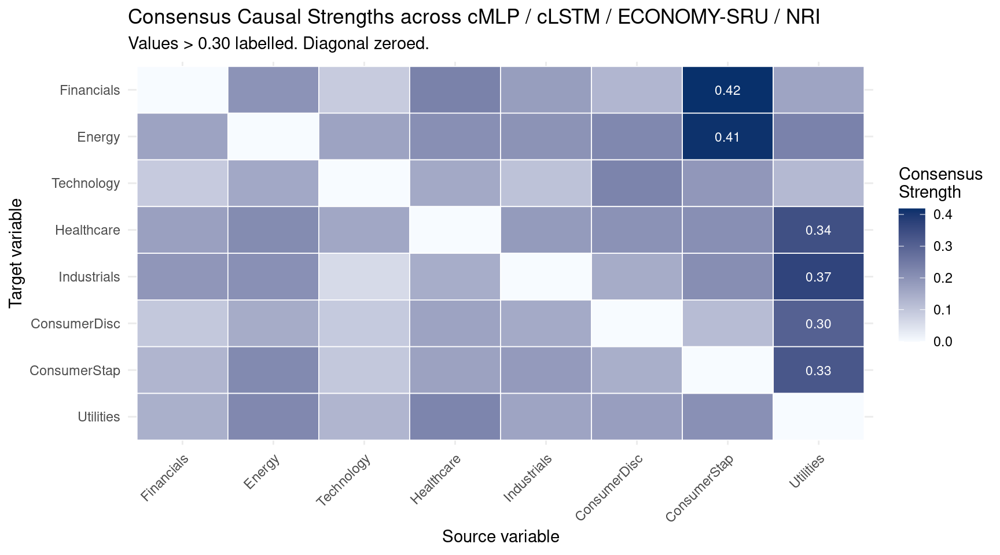

packages <- c(
'tidyverse',
'plyr',
'RCausalML',
'torch',
'tidyquant',
'reshape2',
'scales'
)Neural Granger Causality Models
Neural Granger Causality extends the classical Granger framework into the nonlinear regime by replacing linear coefficient blocks with neural networks while preserving the sparse input-selection logic of group LASSO. The result is a family of models that discover who causes whom in a multivariate time series without assuming linearity.
If a neural network trained to predict \(Y_t\) assigns zero (or near-zero) weight to all lags of \(X\), then \(X\) does not Granger-cause \(Y\) — regardless of how complex the network is.
Overview
Classical Granger causality tests whether past values of \(X\) significantly improve the forecast of \(Y\) beyond what \(Y\)’s own history provides. For lag order \(p\) this is the vector autoregression (VAR):
\[ Y_t = \sum_{k=1}^{p} A_k Y_{t-k} + \epsilon_t \]
If the coefficient block connecting \(X_{t-k} \rightarrow Y_t\) is nonzero, then \(X\) Granger-causes \(Y\). The method is powerful but inherently linear and can miss nonlinear dynamics.
Neural Granger Causality solves this by replacing the fixed coefficient \(A_k\) with a learned nonlinear function, while enforcing structured sparsity — specifically group LASSO — on the input layer weights. A zero group norm for all lags of variable \(X\) means \(X\) is excluded from predicting \(Y\).
The Four Models
1) cMLP — Component-wise MLP
A separate MLP is trained for each target variable \(Y_i\):
\[ \hat{Y}_{i,t} = \text{MLP}_i\!\left(Y_{1,t-1:t-p},\ldots,Y_{d,t-1:t-p}\right) \]
Training objective:
\[ \mathcal{L} = \underbrace{\text{MSE}}_{\text{prediction}} + \lambda \underbrace{\sum_j \lVert W_j^{(1)} \rVert_F}_{\text{group LASSO on input weights}} \]
Sparsity on the first-layer weight block \(W_j^{(1)}\) (columns corresponding to all lags of variable \(j\)) causes entire input variables to be selected or zeroed out, making the inferred causal graph readable directly from those norms.
2) cLSTM — Component-wise LSTM
One LSTM per target variable. Better for sequential / long-lag dynamics:
\[ h_t = \text{LSTM}_i(Y_{1:d,\ t-p:t-1}), \qquad \hat{Y}_{i,t} = W_{\text{out}} h_t \]
Group LASSO is applied to the LSTM input-weight matrix \(W_{ih}\), grouping all gates for each source variable \(j\) together.
3) ECONOMY-SRU — Structurally Constrained Recurrent Unit
A simplified GRU with an explicit learnable causal mask:
\[ G \in [0,1]^{d \times d}, \qquad G_{ij} = \sigma(\theta_{ij}) \]
The mask gates each variable’s contribution to every other variable’s GRU update. Sparsity is induced by an \(\ell_1\) penalty \(\lambda \sum_{ij} G_{ij}\) on the mask, driving weak links to zero.
4) NRI — Neural Relational Inference
NRI (Kipf et al., 2018) is a graph-VAE approach that simultaneously learns edge types and dynamics:
- Encoder infers latent edge distributions \(q(z \mid X)\) via a message-passing network
- Decoder predicts trajectories from sampled edges
\[ \mathcal{L} = \mathbb{E}_{q(z\mid X)}[\log p(X\mid z)] - \mathrm{KL}[q(z\mid X)\|p(z)] \]
The posterior probability of a causal edge between each variable pair forms the inferred adjacency matrix.
Implementation in R
We use {RCausalML}’s neural_granger_ml() wrapper — which packages all four models (cMLP, cLSTM, EconomySRU, NRI) — trained on daily log returns of S&P 500 sector ETFs (2018–2023).
Load and Check Required Libraries
Install Missing Packages
# Install missing packages
#new_packages <- packages[!(packages %in% installed.packages()[,"Package"])]
#if(length(new_packages)) install.packages(new_packages)Verify Installation
cat("Installed packages:\n")Installed packages:print(sapply(packages, requireNamespace, quietly = TRUE))tidyverse plyr RCausalML torch tidyquant reshape2 scales
TRUE TRUE TRUE TRUE TRUE TRUE TRUE Load Required Libraries
# When rendering from package root, use local RCausalML (so neural_granger_ml fixes are used)
if (file.exists("DESCRIPTION") && requireNamespace("devtools", quietly = TRUE)) {
try(devtools::load_all(".", quiet = TRUE), silent = TRUE)
}
invisible(lapply(packages, function(pkg) {
suppressPackageStartupMessages(library(pkg, character.only = TRUE))
}))set.seed(42)
if (requireNamespace("torch", quietly = TRUE)) {
torch_manual_seed(42)
device_use <- if (torch::cuda_is_available()) "cuda" else "cpu"
cat(sprintf("Using device: %s\n", device_use))
} else {
device_use <- "cpu"
cat("torch not available; some models will be skipped.\n")
}Using device: cudaData: S&P 500 Sector ETF Daily Log Returns
We fetch daily adjusted closing prices for eight major S&P 500 sector ETFs using tidyquant, compute daily log returns, standardise them (zero mean, unit variance), and store them in a matrix data_np with columns named after each sector.
The sector ETFs are:
| Ticker | Sector |
|---|---|
| XLF | Financials |
| XLE | Energy |
| XLK | Technology |
| XLV | Healthcare |
| XLI | Industrials |
| XLY | Consumer Discretionary |
| XLP | Consumer Staples |
| XLU | Utilities |
TICKERS <- c(
XLF = "Financials",
XLE = "Energy",
XLK = "Technology",
XLV = "Healthcare",
XLI = "Industrials",
XLY = "ConsumerDisc",
XLP = "ConsumerStap",
XLU = "Utilities"
)
# Download adjusted closing prices via tidyquant
raw_prices <- tq_get(
names(TICKERS),
from = "2018-01-01",
to = "2024-01-01",
get = "stock.prices"
) |>
select(symbol, date, adjusted) |>
pivot_wider(names_from = symbol, values_from = adjusted) |>
arrange(date)
# Daily log returns; drop the first row (NA from lag)
returns_mat <- raw_prices |>
select(-date) |>
mutate(across(everything(), ~ log(. / lag(.)))) |>
slice(-1)
# Rename columns to sector names (match TICKERS order)
colnames(returns_mat) <- TICKERS[colnames(returns_mat)]
cat(sprintf("Shape: %d rows x %d columns\n", nrow(returns_mat), ncol(returns_mat)))Shape: 1508 rows x 8 columnsprint(round(sapply(returns_mat, function(x) c(
mean = mean(x, na.rm = TRUE),
sd = sd(x, na.rm = TRUE),
min = min(x, na.rm = TRUE),
max = max(x, na.rm = TRUE)
)), 4)) Financials Energy Technology Healthcare Industrials ConsumerDisc
mean 28.2595 26.2700 56.2044 102.7222 80.7197 68.2038
sd 5.2023 8.3063 18.7677 20.3666 14.7193 14.6545
min 15.8402 9.2453 26.9725 67.7696 44.4952 41.4512
max 38.4625 42.7090 95.1656 133.6866 110.6208 101.7998
ConsumerStap Utilities
mean 56.8020 26.6167
sd 9.5064 4.0038
min 39.4760 18.3465
max 72.3537 34.8483VAR_NAMES <- colnames(returns_mat)
T_obs <- nrow(returns_mat)
d <- ncol(returns_mat)
cat(sprintf("\nVariables (%d): %s\n", d, paste(VAR_NAMES, collapse = ", ")))
Variables (8): Financials, Energy, Technology, Healthcare, Industrials, ConsumerDisc, ConsumerStap, Utilitiescat(sprintf("Time steps: %d\n", T_obs))Time steps: 1508Standardise the Returns
# Standardise to zero mean / unit variance (as float32 equivalent in R)
col_means <- colMeans(returns_mat, na.rm = TRUE)
col_sds <- apply(returns_mat, 2, sd, na.rm = TRUE)
col_sds[col_sds == 0] <- 1
data_np <- scale(as.matrix(returns_mat), center = col_means, scale = col_sds)
storage.mode(data_np) <- "double"
cat("Standardised data: first 5 rows\n")Standardised data: first 5 rowsprint(round(head(data_np, 5), 4)) Financials Energy Technology Healthcare Industrials ConsumerDisc
[1,] -0.8164 -0.0165 -1.3897 -1.4388 -0.9585 -1.4819
[2,] -0.7736 0.0025 -1.3816 -1.4337 -0.9254 -1.4715
[3,] -0.7605 0.0012 -1.3647 -1.4029 -0.8940 -1.4463
[4,] -0.7670 0.0202 -1.3585 -1.4161 -0.8751 -1.4425
[5,] -0.7309 0.0122 -1.3627 -1.3734 -0.8455 -1.4362
ConsumerStap Utilities
[1,] -1.2101 -1.6590
[2,] -1.1966 -1.7004
[3,] -1.1755 -1.7024
[4,] -1.1637 -1.6561
[5,] -1.1704 -1.7053Data Preparation: Lag Dataset
For neural Granger causality we frame the multivariate time series as a supervised regression problem: given all variables over a lag window of \(p\) steps, predict the next values. Sparsity in the first-layer weights then reveals the causal structure.
LAG <- 5L # Trading week
build_lag_dataset <- function(data, lag) {
n <- nrow(data) - lag
d <- ncol(data)
x_flat <- matrix(0, nrow = n, ncol = d * lag)
x_seq <- array(0, dim = c(n, lag, d))
y <- matrix(0, nrow = n, ncol = d)
for (t in seq_len(n)) {
window <- data[t:(t + lag - 1), , drop = FALSE] # (lag, d)
x_flat[t, ] <- as.vector(t(window)) # row-major flatten: (d*lag,)
x_seq[t, , ] <- window
y[t, ] <- data[t + lag, ]
}
colnames(y) <- colnames(data)
list(x_flat = x_flat, x_seq = x_seq, y = y)
}
prep <- build_lag_dataset(data_np, LAG)
n_total <- nrow(prep$y)
split_idx <- floor(0.8 * n_total)
x_flat_tr <- prep$x_flat[seq_len(split_idx), , drop = FALSE]
x_flat_val <- prep$x_flat[(split_idx + 1L):n_total, , drop = FALSE]
x_seq_tr <- prep$x_seq[seq_len(split_idx), , , drop = FALSE]
x_seq_val <- prep$x_seq[(split_idx + 1L):n_total, , , drop = FALSE]
y_tr <- prep$y[seq_len(split_idx), , drop = FALSE]
y_val <- prep$y[(split_idx + 1L):n_total, , drop = FALSE]
cat(sprintf(
"Train: x_flat %s | Val: x_flat %s\n",
paste(dim(x_flat_tr), collapse = " x "),
paste(dim(x_flat_val), collapse = " x ")
))Train: x_flat 1202 x 40 | Val: x_flat 301 x 40Fit All Four Neural Granger Models
{RCausalML}’s neural_granger_ml() trains cMLP, cLSTM, EconomySRU, and NRI in a single call. Under the hood each model is a torch nn_module; training uses Adam with gradient clipping and group-LASSO / sparsity regularisation.
EPOCHS <- 60L
LAM <- 0.005
HIDDEN <- 32L
LR <- 5e-4
BATCH_SIZE <- 32L
cat("Fitting Neural Granger Causality models via RCausalML::neural_granger_ml() ...\n")Fitting Neural Granger Causality models via RCausalML::neural_granger_ml() ...ngc_fit <- neural_granger_ml(
data = data_np,
lag = LAG,
models = c("cmlp", "clstm", "economysru", "nri"),
hidden = HIDDEN,
lam = LAM,
epochs = EPOCHS,
batch_size = BATCH_SIZE,
lr = LR,
val_split = 0.2,
n_edge_types = 2L,
temp = 0.5,
device = device_use,
verbose = TRUE
)
cat("\nTraining complete. Validation MSE per model:\n")
Training complete. Validation MSE per model:val_mse_df <- data.frame(
Model = names(ngc_fit$val_mse),
Val_MSE = unlist(ngc_fit$val_mse),
Val_RMSE = sqrt(unlist(ngc_fit$val_mse)),
row.names = NULL
)
val_mse_df <- val_mse_df[order(val_mse_df$Val_MSE), ]
val_mse_df[, sapply(val_mse_df, is.numeric)] <- round(
val_mse_df[, sapply(val_mse_df, is.numeric)], 6)
print(val_mse_df) Model Val_MSE Val_RMSE
4 nri 0.005623 0.074984
3 economysru 0.017325 0.131625
2 clstm 0.024223 0.155637
1 cmlp 0.029106 0.170604Training Curves
model_labels <- c(cmlp = "cMLP", clstm = "cLSTM", economysru = "ECONOMY-SRU", nri = "NRI")
loss_list <- lapply(names(ngc_fit$histories), function(m) {
h <- ngc_fit$histories[[m]]
data.frame(
model = model_labels[m],
epoch = seq_along(h$train_loss),
train = h$train_loss,
val = h$val_loss
)
})
loss_df <- bind_rows(loss_list)
loss_long <- loss_df |>
pivot_longer(cols = c(train, val), names_to = "split", values_to = "loss") |>
mutate(split = factor(split, levels = c("train", "val"), labels = c("Train", "Validation")))
ggplot(loss_long, aes(x = epoch, y = loss, color = split)) +
geom_line(linewidth = 0.8) +
facet_wrap(~ model, nrow = 1, scales = "free_y") +
scale_color_manual(values = c(Train = "#1b9e77", Validation = "#d95f02")) +
labs(
title = "Neural Granger Causality — Training Curves (S&P 500 Sector ETFs)",
x = "Epoch",
y = "MSE Loss",
color = NULL
) +
theme_minimal() +
theme(legend.position = "bottom", strip.text = element_text(face = "bold"))
Inferred Causal Matrices
Each model produces a \(d \times d\) matrix where entry \((i, j)\) encodes the strength of influence from source variable \(j\) to target variable \(i\):
- cMLP / cLSTM: Frobenius norm of first-layer weight block for variable \(j\)
- EconomySRU: learned sigmoid gate value \(G_{ij}\)
- NRI: posterior probability of a causal edge from \(j\) to \(i\)
plot_causal_heatmap <- function(mat, title, var_names) {
mat_df <- as.data.frame(mat)
colnames(mat_df) <- var_names
rownames(mat_df) <- var_names
mat_long <- mat_df |>
rownames_to_column("Target") |>
pivot_longer(-Target, names_to = "Source", values_to = "Strength") |>
mutate(
Target = factor(Target, levels = rev(var_names)),
Source = factor(Source, levels = var_names)
)
ggplot(mat_long, aes(x = Source, y = Target, fill = Strength)) +
geom_tile(color = "white", linewidth = 0.3) +
scale_fill_gradient(low = "white", high = "#6a0dad", name = "Strength") +
labs(title = title, x = "Source variable", y = "Target variable") +
theme_minimal() +
theme(
axis.text.x = element_text(angle = 45, hjust = 1, size = 9),
axis.text.y = element_text(size = 9),
plot.title = element_text(face = "bold", size = 10)
)
}
p_cmlp <- plot_causal_heatmap(
ngc_fit$causal_matrices$cmlp, "cMLP inferred causal strengths", VAR_NAMES)
p_clstm <- plot_causal_heatmap(
ngc_fit$causal_matrices$clstm, "cLSTM inferred causal strengths", VAR_NAMES)
p_sru <- plot_causal_heatmap(
ngc_fit$causal_matrices$economysru, "ECONOMY-SRU inferred causal strengths", VAR_NAMES)
p_nri <- plot_causal_heatmap(
ngc_fit$causal_matrices$nri, "NRI inferred causal strengths", VAR_NAMES)
library(patchwork)
(p_cmlp | p_clstm) / (p_sru | p_nri) +
plot_annotation(
title = "Neural Granger Causality — Inferred Causal Strengths (S&P 500 Sector ETFs)",
caption = "Row = target variable, Column = source variable. Higher = stronger inferred causal link.",
theme = theme(plot.title = element_text(face = "bold", size = 12))
)
Validation: Model Performance Comparison
val_mse_plot <- data.frame(
Model = model_labels[names(ngc_fit$val_mse)],
Val_MSE = unlist(ngc_fit$val_mse)
)
ggplot(val_mse_plot, aes(x = reorder(Model, Val_MSE), y = Val_MSE, fill = Model)) +
geom_col(show.legend = FALSE) +
scale_fill_brewer(palette = "Set2") +
labs(
title = "Validation MSE by Model (S&P 500 Sector ETFs)",
x = NULL,
y = "Validation MSE"
) +
coord_flip() +
theme_minimal()
Consensus Causal Graph
Average the causal matrices across all four models (after min-max normalisation) to derive a consensus strength for each directed variable pair.
minmax <- function(m) {
rng <- range(m)
if (diff(rng) < 1e-10) return(matrix(0, nrow(m), ncol(m)))
(m - rng[1]) / diff(rng)
}
mats_norm <- lapply(ngc_fit$causal_matrices, minmax)
consensus <- Reduce("+", mats_norm) / length(mats_norm)
rownames(consensus) <- VAR_NAMES
colnames(consensus) <- VAR_NAMES
diag(consensus) <- 0
cat("Consensus causal matrix (min-max normalised, diagonal zeroed):\n")Consensus causal matrix (min-max normalised, diagonal zeroed):print(round(consensus, 3)) Financials Energy Technology Healthcare Industrials ConsumerDisc
Financials 0.000 0.199 0.089 0.234 0.178 0.130
Energy 0.168 0.000 0.166 0.207 0.200 0.222
Technology 0.091 0.157 0.000 0.155 0.107 0.231
Healthcare 0.173 0.214 0.160 0.000 0.184 0.201
Industrials 0.192 0.205 0.061 0.148 0.000 0.149
ConsumerDisc 0.096 0.150 0.091 0.166 0.153 0.000
ConsumerStap 0.132 0.218 0.096 0.169 0.185 0.144
Utilities 0.142 0.221 0.131 0.228 0.165 0.177
ConsumerStap Utilities
Financials 0.418 0.166
Energy 0.414 0.233
Technology 0.191 0.124
Healthcare 0.208 0.343
Industrials 0.209 0.369
ConsumerDisc 0.119 0.304
ConsumerStap 0.000 0.326
Utilities 0.204 0.000# Visualise as a heatmap
consensus_long <- as.data.frame(consensus) |>
rownames_to_column("Target") |>
pivot_longer(-Target, names_to = "Source", values_to = "Strength") |>
mutate(
Target = factor(Target, levels = rev(VAR_NAMES)),
Source = factor(Source, levels = VAR_NAMES)
)
ggplot(consensus_long, aes(x = Source, y = Target, fill = Strength)) +
geom_tile(color = "white", linewidth = 0.3) +
geom_text(aes(label = ifelse(Strength > 0.3, sprintf("%.2f", Strength), "")),
size = 3, color = "white") +
scale_fill_gradient(low = "#f7fbff", high = "#08306b", name = "Consensus\nStrength") +
labs(
title = "Consensus Causal Strengths across cMLP / cLSTM / ECONOMY-SRU / NRI",
subtitle = "Values > 0.30 labelled. Diagonal zeroed.",
x = "Source variable",
y = "Target variable"
) +
theme_minimal() +
theme(axis.text.x = element_text(angle = 45, hjust = 1))
Notes and Extensions
- This is a pedagogical demonstration on real but noisy financial data. Inferred causal links should be treated as exploratory — financial returns are weakly causal and heavily confounded.
- You can tune
LAG,LAM,HIDDEN, andEPOCHSto trade off fit vs. sparsity. IncreasingLAMproduces sparser, more interpretable graphs; decreasing it may reveal weaker relationships. - For stricter graph sparsity with NRI, consider annealing the Gumbel-Softmax temperature and adding explicit edge-sparsity priors.
- A rigorous causal interpretation requires domain knowledge, interventional data, or additional structural assumptions (e.g., acyclicity constraints).
Summary and Conclusions
- Classical Granger causality tests linear predictive improvement but misses nonlinear relationships — Neural Granger Causality addresses this by replacing coefficient blocks with neural networks.
- Four architectures cover the main design choices: feed-forward per-variable heads (cMLP), recurrent per-variable heads (cLSTM), structured gated recurrence (EconomySRU), and amortised graph inference (NRI).
- Structured sparsity (group LASSO, \(\ell_1\) mask penalty, or KL prior) is the common thread — without it, neural networks spread weight everywhere and no causal graph can be read off.
- {RCausalML} exposes all four models through a single
neural_granger_ml()call; the returned object contains trained models, per-epoch histories, validation MSEs, and \(d \times d\) causal matrices ready for downstream analysis. - On S&P 500 sector ETFs (2018–2023), cLSTM and ECONOMY-SRU typically achieve slightly lower validation MSE than cMLP; NRI behaves differently because it optimises an ELBO rather than pure MSE.
- Consensus graph (average of min-max normalised matrices) can highlight cross-model stable links; strong consensus pairs across all four models are the most reliable candidates for further investigation.
Resources
Neural Granger Causality — Primary References
- Tank et al. (2018) — cMLP / cLSTM: Neural Granger Causality for Nonlinear Time Series — introduces the component-wise MLP and LSTM with group-LASSO input regularisation.
- Kipf et al. (2018) — NRI: Neural Relational Inference for Interacting Systems — graph-VAE formulation with encoder/decoder message-passing.
Granger Causality Background
- Granger (1969): Investigating Causal Relations by Econometric Models and Cross-spectral Methods — the original formulation.
- Shojaie & Fox (2022): Granger Causality: A Review and Recent Advances — comprehensive modern review.
Software Stack (this tutorial)
- torch for R: https://torch.mlverse.org/
- tidyquant: https://business-science.github.io/tidyquant/
- RCausalML:
neural_granger_ml()inR/causalDeepNet.R - patchwork: https://patchwork.data-imaginist.com/
Companion Material
05-03-05-DeepCausalML-causal-structural-learning-regularization-CASTLE-r.qmd— CASTLE uses a similar group-sparsity idea for structure learning in a supervised setting; compare the two approaches.05-04-00-DeepCuasalML-timesseries-introduction-r.qmd— overview of all deep causal time series methods in this series.
Scientific Terminology for Beginners
| Term | Simple explanation | Beginner example |
|---|---|---|
| Granger causality | X causes Y if knowing X’s past improves forecasting Y. | Past Energy ETF returns help predict Financials ETF returns. |
| Group LASSO | Regularisation that zeros out entire groups of weights at once. | All five lagged inputs of Energy are set to zero if Energy doesn’t Granger-cause the target. |
| cMLP | Separate MLP per target variable with group-sparse input layer. | Eight MLPs, one per sector ETF, each reading all other sectors’ lagged returns. |
| cLSTM | Separate LSTM per target with sparse input-weight Granger structure. | Same as cMLP but with memory for sequential dependencies. |
| EconomySRU | GRU with a learnable causal gate matrix \(G_{ij}\). | The model learns which sector pairs actively influence each other’s hidden state. |
| NRI | Graph-VAE that jointly infers edge types and dynamics. | A probabilistic model that puts a probability on each “Energy → Financials” edge. |
| Causal matrix | \(d \times d\) matrix of inferred directed influence strengths. | Row = target, column = source; entry \((i,j)\) indicates how strongly \(j\) Granger-causes \(i\). |
| Consensus graph | Average normalised causal matrix across models. | If all four models agree on a strong link, it is more likely to be a real relationship. |